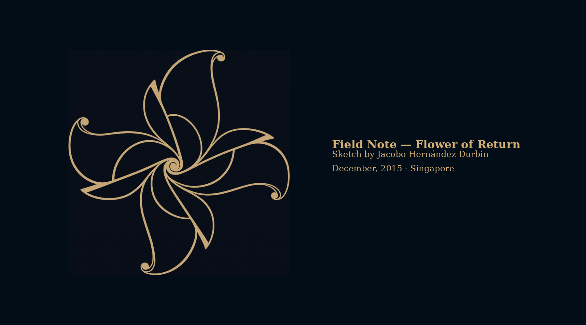

The Forge
A living archive within the commons. The Forge holds tools, practices, story seeds, root notes, and ethical ground layers that are still becoming.
Start with the fruits before the cosmology. Start with the practices before the magnitude. Enter slowly. Let each doorway be enough.

Clear doors first.
These are the best entry points right now: concrete enough to enter, but still connected to the deeper braid.
Threshold
A gentle way of entering the Forge without needing to understand everything at once.
Desert Rain
A quiet reading practice centered on attention, rhythm, and the slow return of language after silence.
When We Stop Pretending
A threshold essay on education, extraction, and the moment learning remembers its natural habitat.
What is warm now.
These pieces are active in the Forge and should remain easy to find without making the front page feel like a map of everything.
When the Wolf Cries, Boy
A protected story seed and threshold prompt about the lump in the throat, misrecognition, silence, and release.
The Empty Hand Is Not Empty
A Flower Road note on wonder, permission, pine cones, embodied memory, and the open gate.
The Crossings
A quiet structural note for relation, thresholds, and the places where the path changes shape.
Contained experiments and practices.
Modules are practical or semi-practical seed forms. They may be early, but they should have enough shape that someone can understand the doorway.
Desert Rain
A quiet reading practice centered on attention and return.
Bellows
A breathing pattern for rhythm, movement, MythWear, RageDance, DiscoveryMode, and quiet walks.
Signal Finder
A field-oriented commons seed for finding living signals without harvesting people.
SunHearth
A tiny sun cradled in a bowl, offered through Professor Mitsyfibbins for warmth, reflection, and supervised inquiry.
Story first. Meaning later.
Story seeds belong near the Forge, but they should not be forced to explain themselves too early. Some are fragments. Some are prompts. Some are protected embers.
Story Seeds Index
The clean public doorway for short narrative seeds, including the Wolf story and its protected prompt placeholder.
When the Wolf Cries, Boy
A father, a son, a forest, a young wolf, and the recognition that arrives without explanation.
The Wolf Who Cried, Boy
A protected DiscoveryMode threshold prompt. Do not over-explain the wolf. Do not force the sharing.
Orientation, not explanation.
Root notes help the work remain in right relation. They should not all be pushed to the front door at once.
When We Stop Pretending
Education, extraction, encounter, and the possibility of standing somewhere real.
The Empty Hand Is Not Empty
Begin with what has fallen. Begin with what is near. Begin with what asks nothing from you but notice.
What I Believe About Intelligence
A root note on relational, contextual, and uncaptured intelligence — hand, pen, and the field between.
The Braid Remembers in Contact
A quiet note against polish that outruns encounter.
Placement note: Gofu Commons, Civic Witness, and other still-forming materials can return to this page once their files are live. Until then, they are better treated as “not yet linked” rather than front-page doors.